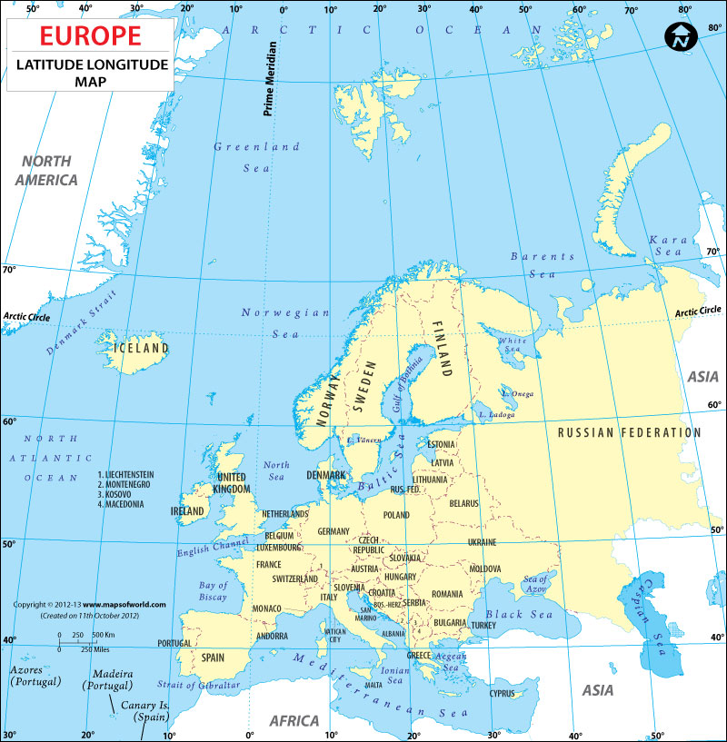

کدام کشور بین عرض جغرافیایی 53 تا 54 درجه شمالی و طول جغرافیایی 7 تا 8 درجه غربی قرار دارد؟
کدام کشور بین عرض جغرافیایی 65 درجه شمالی و طول جغرافیایی 18 درجه غربی قرار دارد؟
کدام کشور بین عرض جغرافیایی 40 درجه شمالی و طول جغرافیایی 4 درجه غربی قرار دارد؟
کدام کشور بین عرض جغرافیایی 61 درجه شمالی و طول جغرافیایی 8 درجه شرقی قرار دارد؟
کدام کشور بین عرض جغرافیایی 61 درجه شمالی و طول جغرافیایی 25 درجه شرقی قرار دارد؟
امتحان به پایان رسید.
نمایش نتیجه
دوباره از اول!
برگشتن به خانه